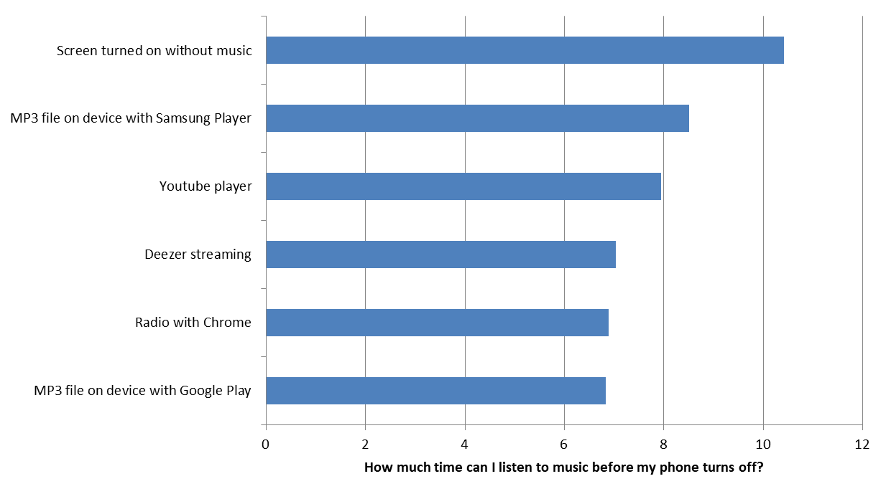
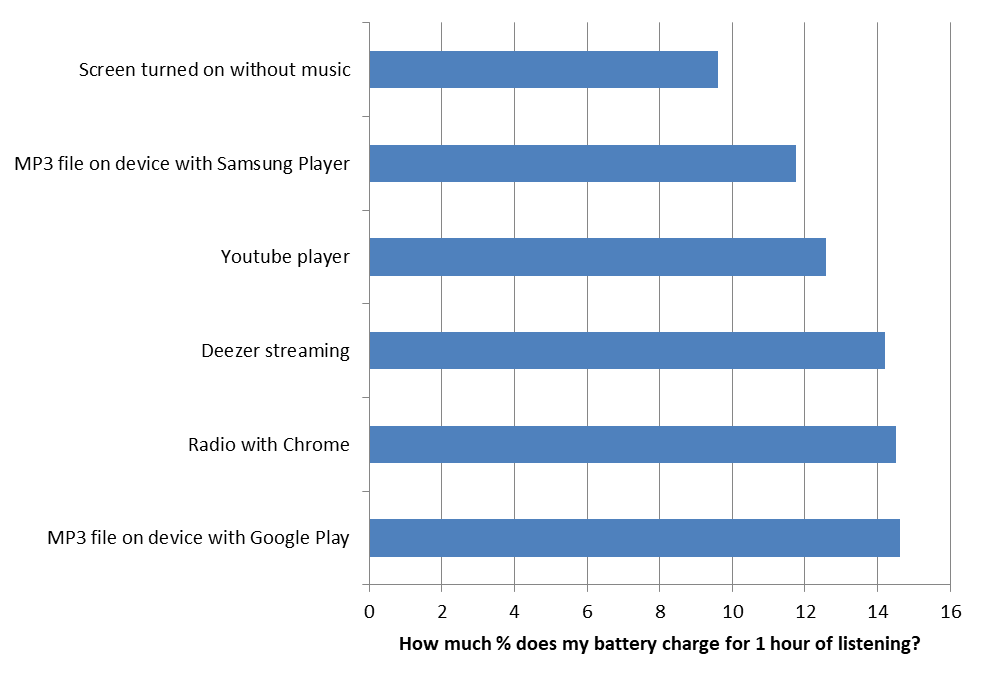
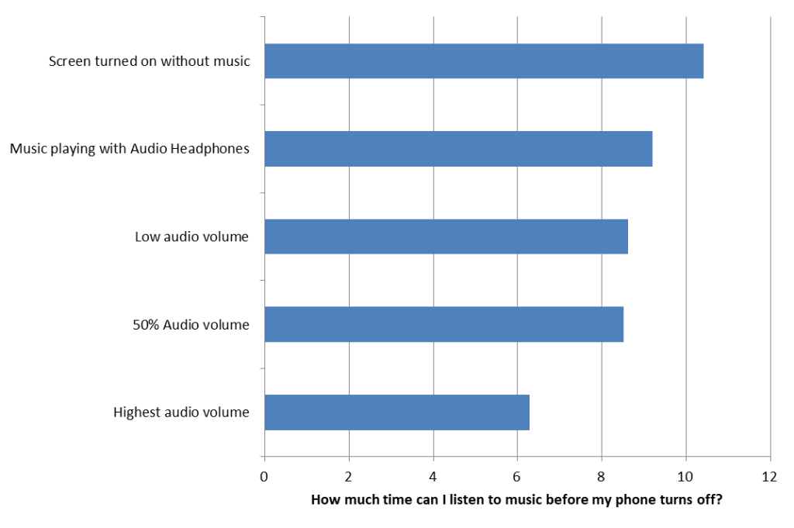
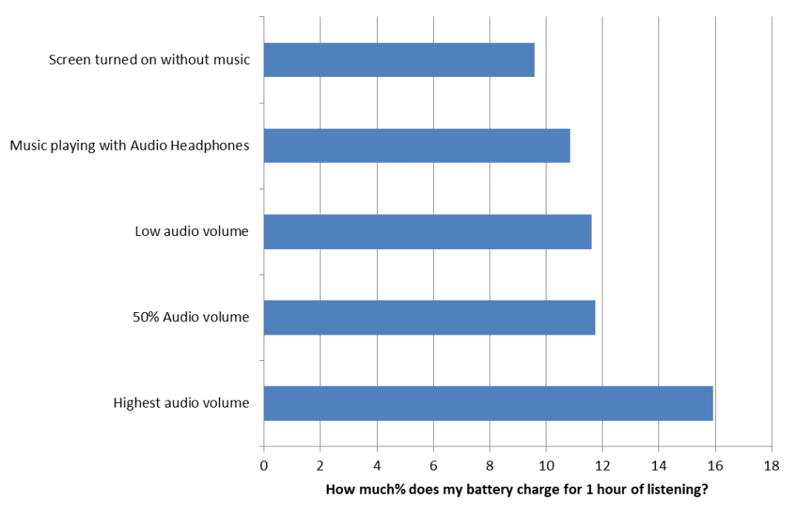
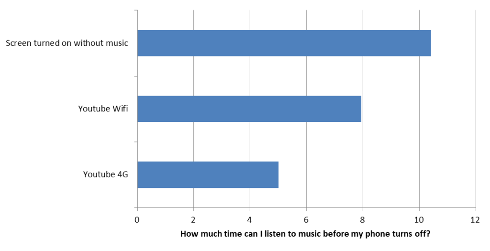
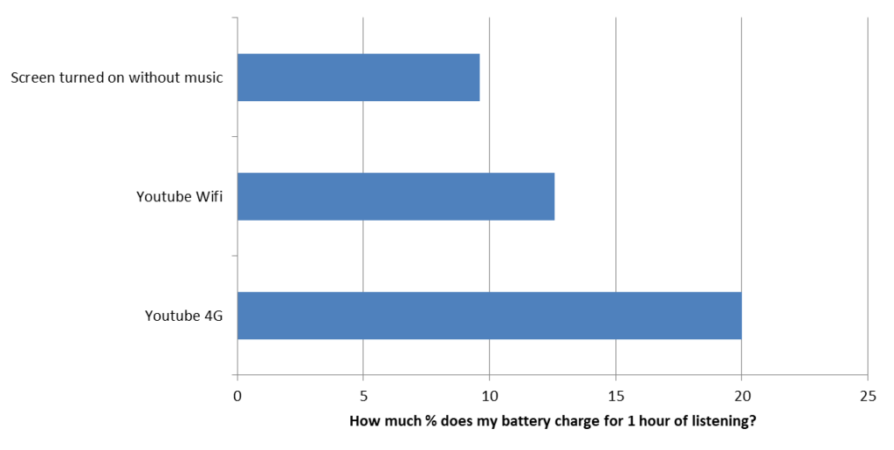
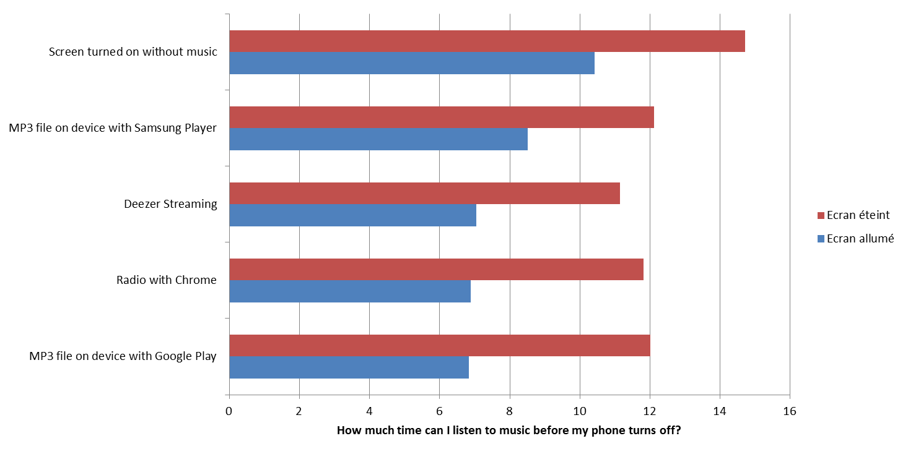
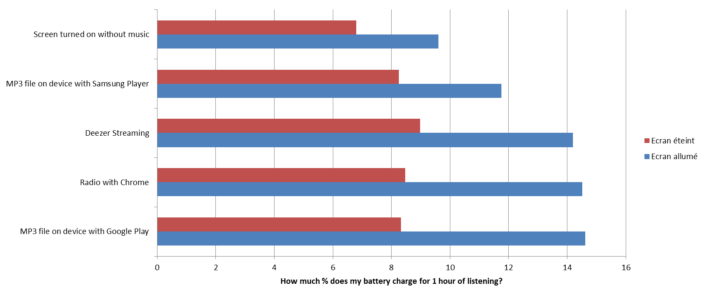
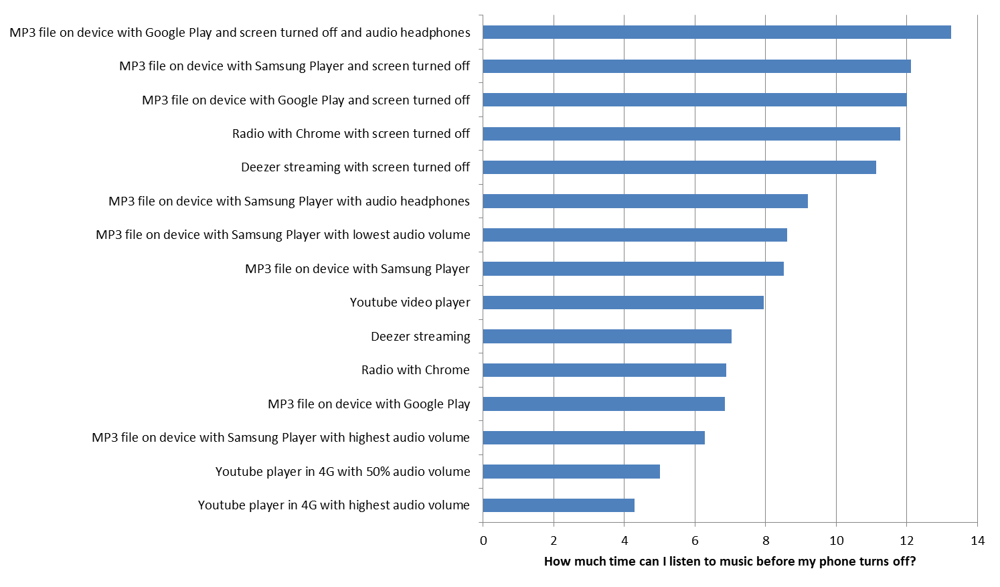

Your phone battery is discharging too fast? When buying your smartphone, the seller has promised you a battery life of 3 days. After one month, you recharge it every day (the phone, not the seller). Maybe the seller (and probably the constructor with him) lied to you about the actual capabilities of the phone? Since the Volkswagen case, we are no longer sure of anything … But the problem is probably more complex. You may not be using your smartphone correctly, or you may be choosing the services that aren’t suit your needs as well.
{{% note %}}
Article to read with some tracks to listen to
Music associated with the topic of the article and according to the tastes (With a distant report on the subject, I admit it):
The music or the autonomy of the phone, you must choose!
It’s a long way from listening to music with an MP3 player or even a cassette player (for the older ones). Now, as for many uses, the smartphone has replaced the different readers. We don’t recharge batteries, but we charge the battery of the smartphone. Especially that there are many moments in everyday life to listen to music: in public transport, at the office, by car, in the evening to fall asleep …
And there are many ways to listen to music: apps like Deezer, Live Radio, Youtube, locally stored MP3 … But what’s the least consumer way for your battery?
Measurement protocol
This study was done on a Samsung Galaxy S7 smartphone. Some results may vary on different devices, however they provide a trend for the digital services that have been evaluated.
I want to choose the least consumer service
So you always have the screen turned on and you particularly like to zap between the tracks. Consider that you are in Wi-Fi and the sound volume is on a medium level.


You can reduce your phone’s battery life by up to 3.5 hours depending on which service you use It’s usually best to play an MP3 that you have stored on the phone. You don’t use an internet connection, so there is less consumption that results. However, we see that apps like Google Play will tend to consume a lot more autonomy than playing music on the Internet (Deezer, [Spotify](https://play.google.com/store/apps/details? id = com.spotify.music), Youtube…). Be careful therefore to choose the player for your MP3 files. Android will tell you in all cases the most consuming applications, you can then make your choice.
Internet radio isn’t the most interesting solution. Pre-downloaded podcasts will be preferred. Indeed, the internet connection coupled with the browser make that the radio players aren’t the most effective.
What if I lower the volume of the audio ?
Does the sound volume affect battery consumption?


Yes and no, for a low to medium level, consumption does not vary much. However, if you use your smarphone as a speaker to broadcast sound around you, the consumption will be higher (2h20 of autonomy less). If you want to hear the louder sound, the headphones will be more useful. Don’t wait for a significant reduction in consumption with a headset.
And if I’m mobile with 4G?
Is it good listening to music on public transport where there is no Wi-Fi network?


Well this at a cost, and a significant cost. It’s best to connect to a Wi-Fi hotspot.
The summary of consumption while listening to music on the Youtube application and all in 4G.
And if I turn off my screen?
Some applications allow to go into sleep mode (or background mode) and let the screen turns off. If so, you will be able to save battery power. The ranking between services hardly changes, you just reduce consumption. Deezer actually becomes the most consumer. It seems that the background treatments aren’t optimized enough within the application.


So what?
Uses vary, depending on tastes, habits, smartphone … and energy consumption too. It’s thus possible to obtain a « range » of autonomy in continuous reading from 4h to 13h.

It’s also possible to change habits to increase autonomy. To go further in this process: identify consumer applications on OS and challenge publishers by asking them to improve is all it’s possible.
That’s green?
Yes, less energy consumption will reduce the load on the battery, so you will perform fewer charge cycles, longevity of the battery will be higher (it’s the cycles of reloading / unloading that l use), and you will extend the overall life of the battery (which is very polluting) see your smartphone.
This study was conducted with the GREENSPECTOR tool that measure the energy consumption of applications on real devices. For more information on methodologies and tools, we invite you to browse this blog.